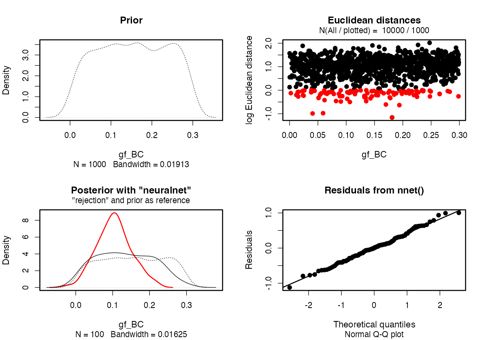

A basic ABC analysis
vignette-01-basics.RmdThis vignette contains an expanded version of the basic ABC inference example from the homepage of demografr. It walks through the process of setting up a demografr ABC pipeline step by step.
Introduction
Imagine that we sequenced genomes of individuals from populations “popA”, “popB”, “popC”, and “popD”.
Let’s also assume that we know that the three populations are phylogenetically related in the following way but we don’t know anything else (i.e., we have no idea about their \(N_e\) or split times):

After sequencing the genomes of individuals from these populations, we computed nucleotide diversity in these populations as well as their pairwise genetic divergence and a particular \(f_4\) statistic, observing the following values of these summary statistics which we saved in standard R data frames:
- Nucleotide diversity in each population:
observed_diversity <- read.table(system.file("examples/observed_diversity.tsv", package = "demografr"), header = TRUE)
observed_diversity#> set diversity
#> 1 popA 8.138167e-05
#> 2 popB 3.262781e-05
#> 3 popC 1.010541e-04
#> 4 popD 8.963820e-05- Pairwise divergence d_X_Y between populations X and Y:
observed_divergence <- read.table(system.file("examples/observed_divergence.tsv", package = "demografr"), header = TRUE)
observed_divergence#> x y divergence
#> 1 popA popB 0.0002442102
#> 2 popA popC 0.0002443844
#> 3 popA popD 0.0002448539
#> 4 popB popC 0.0001099973
#> 5 popB popD 0.0001160577
#> 6 popC popD 0.0001099985- Value of the following \(f_4\)-statistic:
observed_f4 <- read.table(system.file("examples/observed_f4.tsv", package = "demografr"), header = TRUE)
observed_f4#> W X Y Z f4
#> 1 popA popB popC popD -2.796781e-06Now let’s develop a simple ABC pipeline which will infer the posterior distributions of two sets of parameters we are interested in: \(N_e\) of each population lineage, as well as split times between our populations of interest.
Developing an ABC pipeline
Let’s begin by loading demografr together with the R package slendr on which demografr relies on for building and simulating demographic models.
library(demografr)
library(slendr)
# we also have to activate slendr's internal environment for tree sequences
# simulation and analysis
init_env()
# setup parallelization across all CPUs
library(future)
plan(multicore, workers = availableCores())
library(ggplot2)For the purpose of the ABC analysis below, we will bind all statistics in an R list, naming them appropriately. The names of each statistic (here “diversity” and “divergence”) have meaning and are quite important for later steps:
observed <- list(
diversity = observed_diversity,
divergence = observed_divergence,
f4 = observed_f4
)1. Setting up a “scaffold” model
The first step in a demografr ABC analysis is setting up a “scaffold” model—a slendr function which will return a compiled slendr model as its output, and which will accept the model parameters in form of normal R function arguments. In our simple examples, we will define the following function:
model <- function(Ne_A, Ne_B, Ne_C, Ne_D, T_AB, T_BC, T_CD, gf_BC = 0.5) {
popA <- population("popA", time = 1, N = Ne_A)
popB <- population("popB", time = T_AB, N = Ne_B, parent = popA)
popC <- population("popC", time = T_BC, N = Ne_C, parent = popB)
popD <- population("popD", time = T_CD, N = Ne_D[1], parent = popC)
gf <- gene_flow(from = popB, to = popC, start = 9000, end = 9301, rate = gf_BC)
model <- compile_model(
populations = list(popA, popB, popC, popD), gene_flow = gf,
generation_time = 1, simulation_length = 10000,
direction = "forward", serialize = FALSE
)
samples <- schedule_sampling(
model, times = 10000,
list(popA, 2), list(popB, 2), list(popC, 2), list(popD, 2),
strict = TRUE
)
# a return statement is mandatory!
# if a sampling schedule is not generated, use return(model)
return(list(model, samples))
}2. Setting up priors
We are interested in estimating the \(N_e\) of all populations and their split times. demografr makes this very easy using a familiar symbolic formula syntax in R:
priors <- list(
Ne_A ~ runif(1, 10000),
Ne_B ~ runif(1, 10000),
Ne_C ~ runif(1, 10000),
Ne_D ~ runif(1, 10000),
T_AB ~ runif(1, 10000),
T_BC ~ runif(1, 10000),
T_CD ~ runif(1, 10000),
gf_BC ~ runif(0, 1)
)In an ABC simulation step below, the formulas are used to draw the values of each parameter from specified distributions (in this case, all uniform distributions across a wide range of parameter values).
3. Defining summary statistics
Each run of a demografr ABC simulation internally produces a tree sequence as an output. Because tree sequence represents an efficient, succint representation of the complete genealogical history of a set of samples, it is possible to compute population genetic statistics directly on the tree sequence without having to first save each simulation output to disk for computation in different software. Thanks to slendr’s library of tree-sequence functions serving as an R interface to the tskit module, you can specify summary statistics to be computed for ABC using plain and simple R code.
In our example, because we computed nucleotide diversity and pairwise divergence in the individuals sequenced from populations “p1”, “p2”, and “p3”, we will define the following functions. Crucially, when run on a tree-sequence object, they will produce an output data frame in the format analogous to the empirical statistics shown in data frames diversity and divergence above:
compute_diversity <- function(ts) {
samples <- sample_names(ts, split = "pop")
ts_diversity(ts, sample_sets = samples)
}
compute_divergence <- function(ts) {
samples <- sample_names(ts, split = "pop")
ts_divergence(ts, sample_sets = samples)
}
compute_f4 <- function(ts) {
samples <- sample_names(ts, split = "pop")
ts_f4(ts,
W = list(popA = samples$popA),
X = list(popB = samples$popB),
Y = list(popC = samples$popC),
Z = list(popD = samples$popD))
}
functions <- list(
diversity = compute_diversity,
divergence = compute_divergence,
f4 = compute_f4
)Crucially, the outputs of these summary functions must match the format of the observed summary statistics (i.e., the data frames produced must have the same format). This minor inconvenience during ABC setup saves us the headache of having to match values of statistics between observed and simulated data during ABC inference itself.
4. ABC simulations
Having defined the scaffold model, a set of priors for our parameters of interest (\(N_e\) and split times), as well as two summary statistic functions, we can plug all this information into the function simulate_abc().
Before we run a potentially computationally costly simulations, it is a good idea to validate the ABC components we have so far assembled using the function validate_abc():
validate_abc(model, priors, functions, observed)#> ======================================================================
#> A model generating function was provided as a scaffold
#> ======================================================================
#> Testing sampling of each prior parameter:
#> * Ne_A ✅
#> * Ne_B ✅
#> * Ne_C ✅
#> * Ne_D ✅
#> * T_AB ✅
#> * T_BC ✅
#> * T_CD ✅
#> * gf_BC ✅
#> ---------------------------------------------------------------------
#> The model is a slendr function
#> Checking the return statement of the model function... ✅
#> ---------------------------------------------------------------------
#> Checking the presence of required function arguments... ✅
#> ---------------------------------------------------------------------
#> Simulating tree sequence from the given model... ✅
#> ---------------------------------------------------------------------
#> Computing user-defined summary functions:
#> * diversity ✅
#> * divergence ✅
#> * f4 ✅
#> ---------------------------------------------------------------------
#> Checking the format of simulated summary statistics:
#> * diversity ✅
#> * divergence ✅
#> * f4 ✅
#> ======================================================================
#> No issues have been found in the ABC setup!Having verified that all model components are set up correctly, we can proceed to the ABC simulations themselves, using demografr’s function simulate_abc():
data <- simulate_abc(
model, priors, functions, observed, iterations = 10000,
sequence_length = 10e6, recombination_rate = 1e-8, mutation_rate = 1e-8
)The total runtime for the ABC simulations was 0 hours 20 minutes 59 seconds parallelized across 96 CPUs.
At this point we have generated summary statistics for simulations of models using parameters drawn from our priors. In the next step, we can finally do inference of our parameters.
5. ABC inference
Having all the information about observed and simulated data bound in a single R object data, we can finally perform the ABC inference. demografr includes a convenient function perform_abc() which reformats the simulated and observed data in a format required by the R package abc and internally calls the function abc() of that package.
Note that perform_abc is just convenience wrapper around the abc() function in the package abc, saving us a little work juggling the necessary matrices manually. As such, all parameters of the functionabc()can be provided toperform_abc()`, which will then pass them on appropriately.
6. Posterior analysis
Extracting posterior summary tables
Now that we have the ABC output object ready, we can get a data frame with summary statistics of the posterior distributions of our parameters. For instance, we can easily read the maximum a posteriori probability (MAP) of the parameters in the row labelled “Weighted Mode:”:
extract_summary(abc)#> Ne_A Ne_B Ne_C Ne_D T_AB
#> Min.: 180.7139 550.6153 122.8347 -1912.730 1003.899
#> Weighted 2.5 % Perc.: 677.6925 659.8394 2160.5181 1459.736 1291.919
#> Weighted Median: 1813.7545 920.5963 4976.6440 4785.787 1950.690
#> Weighted Mean: 1872.0929 973.5713 5245.6373 4619.442 1927.526
#> Weighted Mode: 1537.3341 780.4878 4239.7113 4966.632 2006.081
#> Weighted 97.5 % Perc.: 3102.8138 1422.5237 9477.6885 8013.777 2678.851
#> Max.: 3755.4707 1847.5938 10638.4032 11360.235 3023.821
#> T_BC T_CD gf_BC
#> Min.: 2379.081 5499.188 -0.173599521
#> Weighted 2.5 % Perc.: 3927.054 6611.181 0.008873377
#> Weighted Median: 5257.157 8501.592 0.276919543
#> Weighted Mean: 5185.616 8437.859 0.307834005
#> Weighted Mode: 5535.438 8597.783 0.233571446
#> Weighted 97.5 % Perc.: 6151.175 9711.744 0.726300955
#> Max.: 6982.378 10565.561 1.248000026Because large tables can get a little hard to read, it is possible to subset to only a specific type of parameter:
extract_summary(abc, param = "Ne")#> Ne_A Ne_B Ne_C Ne_D
#> Min.: 180.7139 550.6153 122.8347 -1912.730
#> Weighted 2.5 % Perc.: 677.6925 659.8394 2160.5181 1459.736
#> Weighted Median: 1813.7545 920.5963 4976.6440 4785.787
#> Weighted Mean: 1872.0929 973.5713 5245.6373 4619.442
#> Weighted Mode: 1537.3341 780.4878 4239.7113 4966.632
#> Weighted 97.5 % Perc.: 3102.8138 1422.5237 9477.6885 8013.777
#> Max.: 3755.4707 1847.5938 10638.4032 11360.235
extract_summary(abc, param = "T")#> T_AB T_BC T_CD
#> Min.: 1003.899 2379.081 5499.188
#> Weighted 2.5 % Perc.: 1291.919 3927.054 6611.181
#> Weighted Median: 1950.690 5257.157 8501.592
#> Weighted Mean: 1927.526 5185.616 8437.859
#> Weighted Mode: 2006.081 5535.438 8597.783
#> Weighted 97.5 % Perc.: 2678.851 6151.175 9711.744
#> Max.: 3023.821 6982.378 10565.561Alternatively, we can also extract the posterior summary for a single parameter like this:
extract_summary(abc, param = "Ne_D")#> Ne_D
#> Min.: -1912.730
#> Weighted 2.5 % Perc.: 1459.736
#> Weighted Median: 4785.787
#> Weighted Mean: 4619.442
#> Weighted Mode: 4966.632
#> Weighted 97.5 % Perc.: 8013.777
#> Max.: 11360.235Visualizing posterior distributions of parameters
Because a chart is always more informative than a table, we can easily get a visualization of our posteriors using the function plot_posterior():
plot_posterior(abc, param = "Ne") + coord_cartesian(xlim = c(0, 10000))
Excellent! It looks like we got really nice and informative posterior distributions of \(N_e\) values!
In contrast, it looks like the posterior distributions for split times are not as informative compared to the priors that we specified:
plot_posterior(abc, param = "T") + coord_cartesian(xlim = c(0, 10000))
Because the internals of demografr ABC objects are represented by standard objects created by the abc package, we have many of the standard diagnostics functions of the abc R package at our disposal. For instance, we can use the standard function plot() to verify that the posterior (red line) for one of the split times matches the prior (dashed line), suggesting that the data we provided (nucleotide diversity and pairwise divergence) are not sufficient statistics to capture enough information about population divergences.
plot(abc, param = "T_BC")
In contrast, we can see that there most definitely is sufficient information encoded in the summary statistics to tell us quite a bit about the \(N_e\) of our populations:
plot(abc, param = "Ne_B")